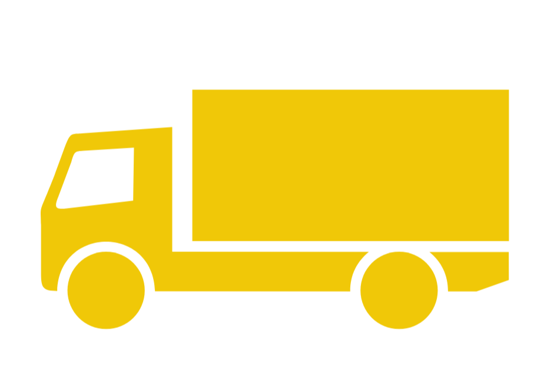

Serviciile noastre

Soluții industriale complete
Consultanță tehnică gratuită

Transport la beneficiar

Service autorizat
Experiența acumulată pe parcursul anilor, în domeniul sudării, debitării și șlefuirii metalelor, în colaborare cu producători de nivel mondial precum Esab, Binzel, GCE, 3M și utilizării în mod direct a produselor comercializate, recomandă aceste materiale ca având o calitate net superioară pe acest segment de piață.
Debutând cu o echipă dinamică de profesioniști, pe plan local, cu seriozitate și angajament continuu față de clienții noștri și oferind soluții tehnologice complete, în prezent reprezentăm un procent semnificativ în distribuția de echipamente și consumabile de sudare, materiale abrazive și adezive, precum și echipamente de protecția muncii pe plan național.
Citește mai mult
Soluții industriale complete
Consultanță tehnică gratuită
Transport la beneficiar
Service autorizat
Societatea METADUR WELD SISTEM colaborează cu companii naționale și internaționale din diverse domenii de activitate — industria petrolieră, construcții de unelte și mașini, construcții civile și industriale, șantiere navale, service auto etc. — aflate pe întreg teritoriul țării.
Pentru a răspunde nevoilor agenților economici, colaborăm cu producători de renume mondial în domeniul sudării, tăierii și șlefuirii metalelor, precum și în protecția muncii. Comercializăm la nivel național următoarele mărci:

Obiectivul strategic al societății METADUR WELD SISTEM este acela de a asigura o dezvoltare dinamică și durabilă armonizată cu cea a companiilor partenere.
➤ Societatea METADUR WELD SISTEM, fiind conștientă de responsabilitățile sale sociale, legate de protecția mediului și utilizarea eficientă a resurselor naturale, speră ca partenerii de afaceri să înțeleagă complexitatea și nivelul înalt al sarcinilor pe care trebuie să le îndeplinească în legătură cu protecția și conservarea mediului.
Firma noastră înțelege să asigure permanent recuperarea și reciclarea deșeurilor provenite din activitățile desfășurate în conformitate cu normele europene în vigoare.